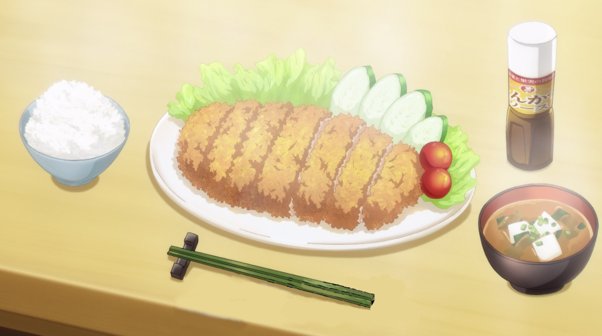

Tonkatsu

Description
Tonkatsu is a delicious meal that can be eaten any time of the day! Try this easy recipe out!
Ingredients
Directions
- Mix up your egg in a bowl
- Add your pork to the egg mix
- Add your egg soaked pork into your flour
- Add your flour and egg soaked pork back into the egg mix
- Add your pork into the panko
- Fry your pork until internal temperature of 100 degrees celsius